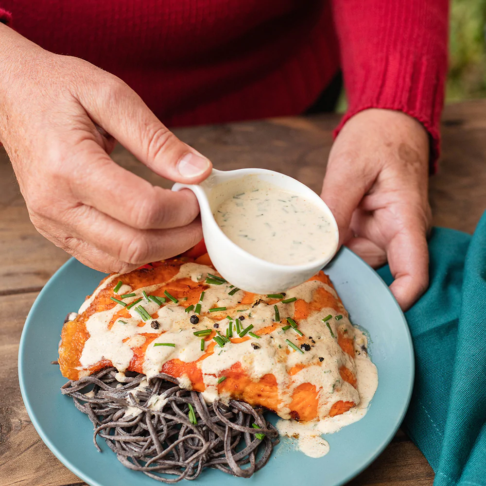
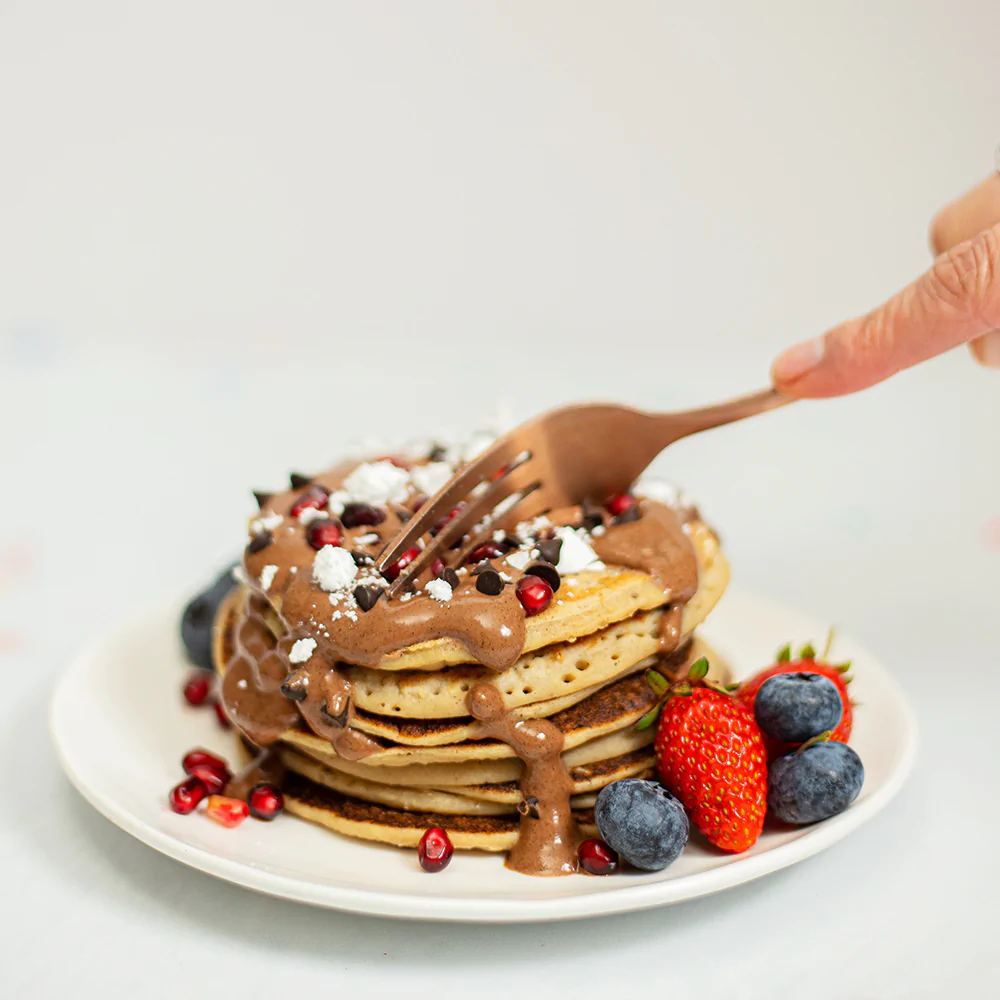
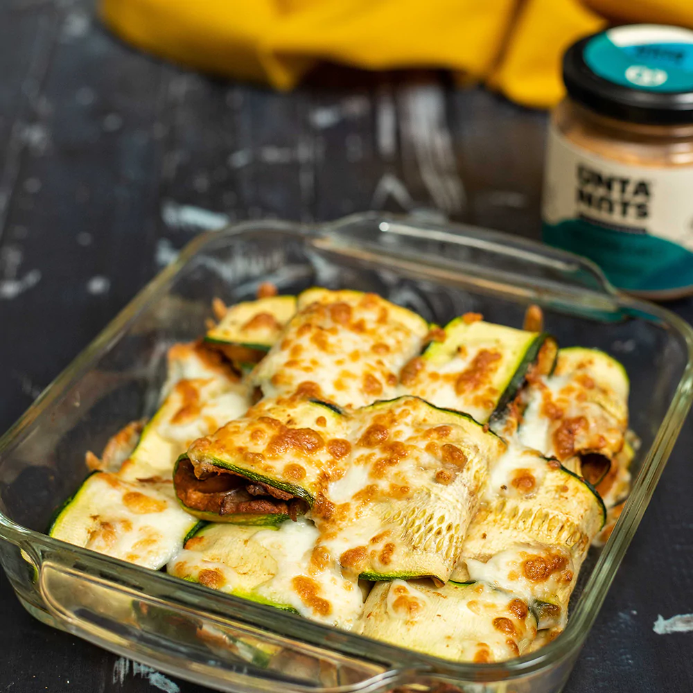

Salmon en salsa Ciboulette
La versatilidad de Untanuts hace que su textura pueda ser diluida para crear cremas y salsas deliciosas. Ciboulette E es una fantástica manera de aportar vitamina E.
Ir a Receta

Panqueque Rellenos
Los panqueques de avena son una opción saludable, llena de fibra para nuestra microbiota. ¡Junto con la dulzura natural de nuestra Moustella, hará de tus desayunos tu comida favorita!
Ir a Receta

Lasaña de Zapallo Italiano
Estás buscando una receta 100% Keto, sabrosa y llena de sabores que te evoquen los viajes y la exploración, esto es para disfrutar en Familia y junto a tus mejores amigos!
Ir a Receta